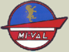

Ciclomotore
Mi-Val 48 cc "Presa diretta" 1960 |
 |
Nelle immagini seguenti è mostrato l'esemplare conservato e riportato in efficienza grazie alla pazienza dei signori Giani, padre e figlio, della provincia di Milano. Complimenti per il lavoro!
Vista lato sinistro |
Vista lato destro |
Vista anteriore-sinistra |
Vista anteriore-destra |


Cliccare sulle immagini per ingrandire